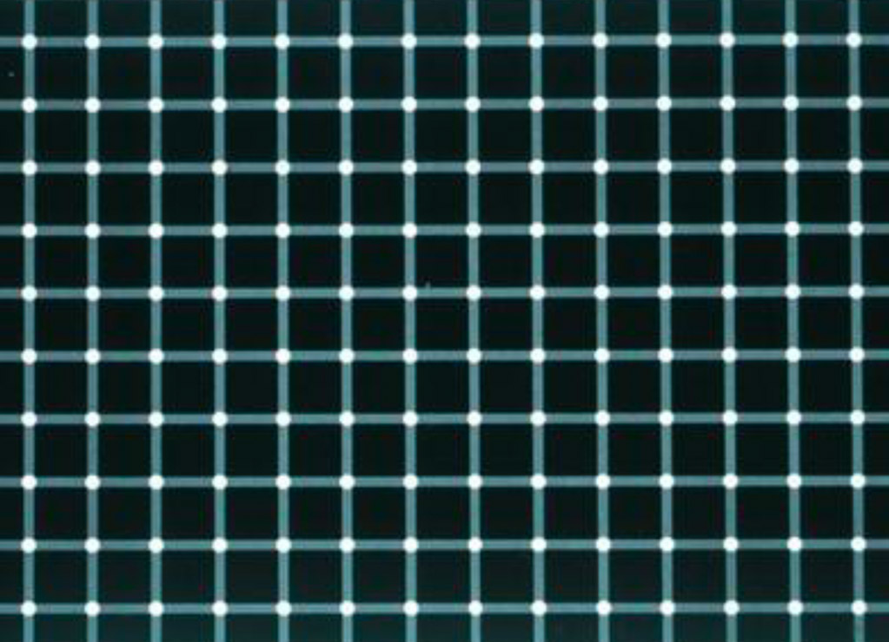

cours
La représentation du mouvement
cours
La représentation du mouvement
cours
Origine du motion design, naissance d'After Effects
After Effects
Décomposer pour comprendre le mouvement

références
Les principes généraux de l'animation

Technique
Les images,les masques et les caches